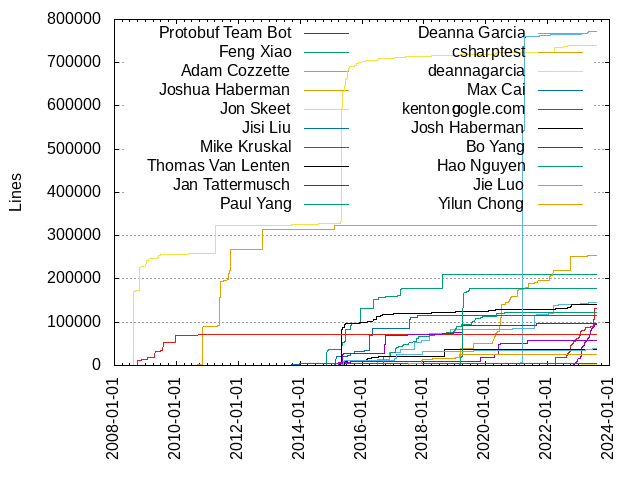
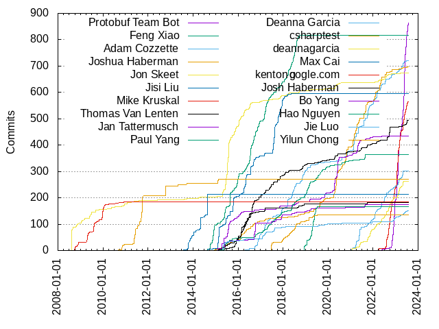

Authors
| Author | Commits (%) | + lines | - lines | First commit | Last commit | Age | Active days | # by commits |
|---|
| Protobuf Team Bot | 863 (7.03%) | 95938 | 73674 | 2022-05-19 | 2023-07-28 | 434 days, 23:46:32 | 199 | 1 |
| Feng Xiao | 816 (6.65%) | 210558 | 75819 | 2011-04-30 | 2018-09-24 | 2704 days, 2:22:42 | 379 | 2 |
| Adam Cozzette | 720 (5.87%) | 145463 | 179377 | 2016-04-27 | 2023-06-28 | 2618 days, 4:44:22 | 373 | 3 |
| Joshua Haberman | 696 (5.67%) | 253455 | 214000 | 2014-12-09 | 2023-07-11 | 3135 days, 17:53:28 | 324 | 4 |
| Jon Skeet | 674 (5.49%) | 738962 | 803302 | 2008-08-14 | 2023-03-20 | 5331 days, 11:19:58 | 249 | 5 |
| Jisi Liu | 596 (4.86%) | 115271 | 40581 | 2014-08-28 | 2018-05-15 | 1356 days, 3:48:02 | 201 | 6 |
| Mike Kruskal | 565 (4.60%) | 131477 | 159855 | 2021-12-21 | 2023-07-28 | 584 days, 9:01:45 | 183 | 7 |
| Thomas Van Lenten | 495 (4.03%) | 142106 | 48958 | 2015-05-01 | 2023-07-17 | 2999 days, 1:45:13 | 242 | 8 |
| Jan Tattermusch | 435 (3.54%) | 57637 | 60069 | 2015-03-16 | 2022-05-18 | 2619 days, 11:42:55 | 188 | 9 |
| Paul Yang | 365 (2.97%) | 122439 | 63556 | 2015-03-08 | 2021-09-14 | 2381 days, 17:58:30 | 269 | 10 |
| Deanna Garcia | 302 (2.46%) | 771607 | 763287 | 2021-01-21 | 2023-05-08 | 836 days, 21:41:28 | 138 | 11 |
| csharptest | 270 (2.20%) | 323107 | 118179 | 2010-09-03 | 2015-02-22 | 1632 days, 22:14:56 | 59 | 12 |
| deannagarcia | 262 (2.13%) | 1513 | 705 | 2021-01-21 | 2023-05-09 | 837 days, 18:36:26 | 153 | 13 |
| Max Cai | 212 (1.73%) | 4264 | 1454 | 2013-07-24 | 2014-08-29 | 401 days, 2:30:45 | 41 | 14 |
| kenton@google.com | 184 (1.50%) | 70876 | 39264 | 2008-09-19 | 2010-11-30 | 802 days, 6:00:31 | 87 | 15 |
| Josh Haberman | 181 (1.47%) | 36949 | 29755 | 2015-02-17 | 2021-09-28 | 2414 days, 18:37:58 | 101 | 16 |
| Bo Yang | 175 (1.43%) | 96961 | 43941 | 2015-02-03 | 2021-08-27 | 2396 days, 17:04:08 | 80 | 17 |
| Hao Nguyen | 166 (1.35%) | 178941 | 145837 | 2018-12-10 | 2019-07-11 | 213 days, 6:59:19 | 56 | 18 |
| Jie Luo | 151 (1.23%) | 38862 | 11454 | 2015-04-17 | 2023-07-20 | 3015 days, 19:30:56 | 110 | 19 |
| Yilun Chong | 136 (1.11%) | 25255 | 14439 | 2017-06-23 | 2019-07-08 | 745 days, 0:46:35 | 67 | 20 |
These didn't make it to the top: Wink Saville, Elliotte Rusty Harold, Sandy Zhang, Rafi Kamal, David L. Jones, Ulas Kirazci, Sydney Acksman, Matt Fowles Kulukundis, liujisi@google.com, Matt Kulukundis, Martijn Vels, Chris Fallin, Jason Lunn, ArnoldZokas, zhangskz, theodorerose, Brent Shaffer, Marcel Hlopko, Tamir Duberstein, James Newton-King, Brian Duff, xiaofeng@google.com, Yuriy Chernyshov, Tres Seaver, jieluo@google.com, The Android Open Source Project, Derek Perez, Dave MacLachlan, temporal, Jorg Brown, Dan O'Reilly, Konstantin Podsvirov, Josh Humphries, Ying Wang, Walter Gray, Chris Kennelly, Kun Zhang, Yannic Bonenberger, Dennis Shao, Carlos O'Ryan, Yannic, Joe Bolinger, Jakob Buchgraber, Sergio Campama, Laszlo Csomor, Sergio Campamá, Jorge Canizales, Eric Salo, Julien Brianceau, Brett McBride, Tomo Suzuki, Theodore Rose, Jeff Davidson, mkruskal-google, Manjunath Kudlur, cclauss, Joshua Humphries, Jerry Berg, Keith Smiley, Andrew Flynn, dmaclach, zhangkun83, xfxyjwf, Peter Kasting, Jan-Willem Maarse, Hong Shin, Harvey Tuch, pliard@google.com, Fahrzin Hemmati, Benjamin Peterson, teboring, Stanley Cheung, Sil3ntStorm, Matt Kwong, Markus Heß, Bill Yi, Austin Schuh, Tim Swast, Rob Widmer, Protobuf Team, Nobuaki Sukegawa, Masaki Hara, Ivan Shynkarenka, Eric Anderson, Brian Silverman, BSBandme, Anuraag Agrawal, michaelbausor, Xiao Hang, Tom Hughes, TeBoring, ObsidianMinor, Nikolai Vavilov, Mohamed Heikal, Krishna, Jozef Izso, Joel Courtney, Jie Dai, Jensaarai, Jean-Baptiste Queru, Florian Enner, Dimitris Koutsogiorgas, David Ostrovsky, Daniel Kurka, Corentin Le Molgat, Christian Maurer, Ben Boeckel, Baligh Uddin, Adam Greene, Aaron Patterson, tony, ericsalo, drivehappy, cgrushko, Zachary Anker, Wojciech Mandrysz, William Orr, ST-DDT, Peter Newman, Nicolas "Pixel" Noble, Minsoo Cheong, Miguel Young de la Sota, John Brock, Darly Paredes, Daniel Schopf, Daniel Martin, Daniel Azuma, Bu Sun Kim, Brecht Sanders, Arfrever Frehtes Taifersar Arahesis, Adam Michalik, Adam Metcalf, Adam Liddell, reed-lau, murgatroid99, gk5885, appledragon, Yuhanun Citgez, Wei-Yin Chen (陳威尹), Wang Kirin, Vladimir Moskva, Thomas Colthurst, Thanet (Knack) Praneenararat, Tapasweni Pathak, Rodrigo Hernandez, Peter Marton, Nipunn Koorapati, Mitsuru Oshima, Ming Zhao, Miguel Young, Matt Hauck, Marjolein Heyndrickx, Lukas Fittl, Khing, Kent Ross, John Millikin, Erik Benoist, David Mollitor, Byron Yi, Brendan Ribera, Brad Larson, Ayende Rahien, Axel Huebl, Andrew Paprocki, Anders Carling, Adal Chiriliuc, なつき, tison, stone4774, rafikamal, mike07026, marjoleinheyndrickx, jonathan.skeet, gerben-s, cpovirk, boscosiu, alien, Yun Peng, Yangqing Jia, Xùdōng Yáng, Ubuntu, Steven Peters, Steven Parkes, Sebastian Schuberth, Sarah Zakarias, Robert Edmonds, RPG3D, Peter Sobot, Pete Warden, Parnic, Nico Weber, Nathan Brown, Michele Locati, Michael WERLE, Marnix Bouhuis, Marcin Wyszynski, Marc Plano-Lesay, Mahdi Hosseini, Leandro Gracia Gil, Kal Conley, Justin Lebar, June, Jos Hickson, Joe Tsai, Jingwen Chen, Jeffrey Walton, Isaiah Peng, Greg Miller, Gergely Nagy, Florin Crișan, Florian Simon, Ficus Kirkpatrick, Ewout, EFanZh, Dongjoon Hyun, Dmitry Lomov, Dmitri Gribenko, David Z. Chen, David Supplee, Copybara-Service, Christian von Arnim, Christian Blichmann, Chris Bacon, Brandon Cole, Biswapriyo Nath, Behrooz Khorashadi, Bas van der Linden, Arfrever, Antony Dovgal, Andy Hochhaus, Andrew Spiering, Andrew Harp, Alexander Reynolds, Abhishek Jain, @rubynerd, xuwei-k, woegster, scentini, salamaniibm, ramrunner, petr.dannhofer, nmittler, myd7349, ming, kang jinci, johnnyshields, johanmoe, jesse, huahang, goorov, eissajamil@gmail.com, chandlerc, beardedn5rd, afshinpir, Zouhair Mahieddine, Yohei Yukawa, Yash Tibrewal, Xiang Dai, Xavier Léauté, WuGaoyin, William A Rowe Jr, Warren Falk, Vy Nguyen, Vitaly Buka, Upils, Trent Houliston, Tom Chao, Toby Hsieh, Tim Ebringer, Thomas Karlsson, Thomas Hisch, TechProofreader, Tao Li, Stephane Moore, Stefan Huber, Silviu Calinoiu, Silvio Traversaro, Sigurd Meldgaard, Seth Greenstein, Seth Girvan, Scott Hart, Saurabh Singhal, Sam Smith, Sam Hasinoff, Saleem Abdulrasool, Ryan Gordon, Romain Geissler, Roberto Cosenza, Robert S. Edmonds, Richard Shin, Preston Van Loon, Prawn, Po-Chuan Hsieh, Philipp Stephani, Peter Zhu, Per Lundberg, Paul Jolly, Patrick Xia, Param Reddy, Otto Kekäläinen, Niranjan Bhaskar, Nikhil Benesch, Nicholas Seckar, Nevena Kotlaja, Nehal J Wani, NathanGrand, Nadav Samet, Mizux, Mitchell Macpherson, Misha Seltzer, Miradham Kamilov, Michał Janiszewski, Michael Shields, Martin Pärtel, Mario J. Rugiero, Luke Sandberg, Ludger Sprenker, Luc Thevenard, LitingLin, Linus Tufvesson, Liam Miller-Cushon, Leonard Hecker, Leon Barrett, Leif Gruenwoldt, Kenji Abe, Kenichiro IDA, Keith Moyer, Karol M. Langner, Justin Buchanan, Juan Silveira, Juan Leni, Josh Kelley, Jorge Gorbe Moya, Jonathan Ringer, Joel Johnson, Jesse Wilson, Jeffrey Quesnelle, Jeff Schnitzer, Jeff Ching, Jean byroot Boussier, Jean Boussier, Jan-Gerd Tenberge, James Brock, Harald Fernengel, Hans Wennborg, Hamdi Sahloul, Guillaume Egles, Gregory P. Smith, Gregory Haskins, Gregor Jasny, Go Kudo, Gaurav Vaish, Gabriel Kliot, Felix Jendrusch, FaBrand, Esun Kim, Erik Mavrinac, Elliotte Harold, Egor Pugin, Dwayne Litzenberger, Dennis Cappendijk, David Hirschfeld, Dave Hawkey, Dan Albert, Damien Neil, Damien Martin-Guillerez, Cody Schroeder, Clement Courbet, Chuck Atkins, Chris Povirk, Charles Stanhope, Charles Munger, Charlene, Changming Sun, Chad Wilson, Camillo Lugaresi, Calder Coalson, Bruce Dawson, Brendan McCarthy, Brad Smith, Benjamin Barenblat, Ben Bader, Behzad Tabibian, Bairen Yi, Aurélien Grenotton, Aurimas Liutikas, Aurimas, Asra Ali, Arun Olappamanna Vasudevan, Arkadiy Shapkin, Antoni Buszta, Anton Fedorov, Antoine Pitrou, Antal Tátrai, Andrei Shevtsov, Andrei Nigmatulin, Andreas Eger, Alexey Malov, Alexander Shadchin, Alex Konradi, Aleksandr Parfenov, Adam Bliss, Adam, Abdul Sami, Aaron Bray, AN Long, 吕海涛, مهدي شينون (Mehdi Chinoune), Łukasz Twarduś, Łukasz Strzałkowski, zhsyourai, zex, zajca, yohei yoshimuta, yksten, yjjnls, yeqown, yejianwu, xidang, xiaahui, wujingchao, wsw2016, vjpai, vijay-bhatt, vervaekejonathan, veawor, urfinjuezz, unknown, topillar, tomerv, toc007, themoox, tanderson-google, summerCol, strangewiz, sheffatguidance, senhalil, secup, salamani, s1341, root, rmstar, randomguy3, punmy, prehistoric-penguin, pravin-dsilva, postmasters, pesho.petrov, parker, panda, owentou, os72, noahdietz, nickreid, nashimus, mkosieradzki, miyucy, micw523, michaelpengcn, mgabris, medinandres, mdepristo, marwan-at-work, makdharma, lzj, lundefugl, lukeocamden, listonjesse, leovitch, lbermes, lakshayg, kvukic, kunhtkun, kkm, king6cong, kenji yoshida, kbinani, junzeng, johnlow95, john hood, jbloggz, jasonh@google.com, jasonh+personal@google.com, j-min5u, igorpeshansky, idodod, i9, heretic, haoyuanli, guptasu, grindhold, giokara-oqton, frrakn, dyyap, dylanetaft, dickmao, detlevschwabe, depristo, dependabot[bot], debugx, dankm, cyyber, cui fliter, cnauroth, cjtallman, chezRong, chenzhihui, cfredri4, cburdick, c-parsons, bttk, brucearctor, brian-peloton, bmoyles0117, bitspill, bangert, avgweb, archpaleus, amirhadadi, alusco-scratch, alanbur, acidtonic, abyss7, aaron ai, Zi Shen Lim, Zhao Junwang, Zearen Wover, Zak Henry, Yuzhang Hu, Yutian Li, Yuri Vanin, Yunlong Liu, Yuki Yugui Sonoda, Yue Zhu, Yue Zhang, Yuchen Xie, Yoav Miller, Yilei Yang, Yibo Cai, Yeolar, Yamamoto, Hirotaka, YJ, Xiaoshuang LU, Xavier Bonaventura, Wojciech Mamrak, WilliamWhispell, William Jagels, Wiktor Tomczak, WenTao Ou, Wayne Zhang, Wang Qilin, W, Vperus, Vladimir Kovpak, Vlad Vesa, Vincent Thiberville, Viktor Szathmáry, Vijay Pai, Veres Lajos, Vegard Storheil Eriksen, Vassil Kovatchev, Vasily Fomin, Vasiliy Tolstov, Vasiliy Kudryavtsev, UebelAndre, Twig, Twice, Tushar Bhatnagar, Tristan Pratt, Tony Wong, Tony Allevato, Tongliang Liao, Tommy Dew, Tomer Vromen, Tomas Abrahamsson, Toby Schneider, Tobias Liese, Tobias Jungel, Tiziano Santoro, Timothy Younger, Timo Röhling, Timo Lange, Time, Tim Gates, Tiago Quelhas, Thomas Klausner, Thomas Griffith, Thomas BARBIER, Thomas BACCELLI, Thiago C. D'Ávila, Ted Pudlik, Taufiq Rahman, Tamarous, Sylvain Baubeau, Swen Kooij, Sufir, Stuart Campbell, Steve Rago, Steve Manuel, Stephen Oberholtzer, Stephen Kennedy, Stephan Hartmann, Steffen Wittmeier, Stefan Sauer, Stanislav Kashirin, Srivats P, SpringHack, Sorah Fukumori, Son Luong Ngoc, Sinziana Gafitanu, Silver Chan, Shigeo Hashimoto, Shai Barack, Sergey Geyn, Sergey, Sergei Ivanov, Sebastian Lövdahl, Sean Lu, Sankate Sharma, Sanchay Harneja, Samuel Rossoff (of The Ebon Blade), Sam Saccone, Sam Nobs, Sahin Yort, Ryosuke Hasebe, Ryland Degnan, Ryan VanderMeulen, Ruslan Manaev, Ruben Garat, Roy Williams, Ross Wang, Rosen Penev, Rose, Ronny Krüger, Roni Lichtman, Ron Klein, Romfos, Roman Popov, Roman Nekhoroshev, Roman Kamyk, Romain Geissler @ Amadeus, Roger Chen, Robin Linden, Robert Yokota, Robert Schumacher, Robert Morris, Robert Hancock, Rob Shakir, Rob Earhart, Ricky Pai, Richard Geary, Richard Fussenegger, Raul Bocanegra Algarra, Radoslaw Busz, Qiwen Zhao, Qartar, Przemyslaw Szczepaniak, Przemyslaw Olejniczak, Protocol Buffers Docs, Pradeep Gollakota, Postmodern, Piotr Sikora, Phillipp Schoppmann, Phil Felton, Phil Clay, Phani Rithvij, Petter Strandmark, Petros Pissias, Petr Prokhorenkov, Petr Jediný, Peter Ebden, Peter Collingbourne, Petar Dambovaliev, Penelope Phippen, Pavel Perestoronin, Pavel, Paul Wankadia, Paul MARS, Paul Kilgo, Paul Cody Johnston, Paul Beusterien, Patrick Strawderman, Pat Moroney, Pascal Muetschard, Parveen Bhatia, Parth Kolekar, Osman Cihangir, Oskar Świtalski, Omari Stephens, Oliver Eikemeier, Oliver Bristow, Oleg Vereshko, Oleg Malyavkin, Oleg Kolosov, Oleg Kolesov, Oleg Golberg, Okpist, NulAsh, Noel Kim (김민혁), Noah Dietz, Nils, Niklas Lochschmidt, Nikhil Pothuru, Nicolás Elliott, Nicolas Noble, Nickolay Mazurkin, NicklasWallgren, NickFengIBM, Nick Presta, Nic McDonald, Niall Douglas (s [underscore] sourceforge {at} nedprod [dot] com), NexusNull, Neakxs, Nazarbek Altybay, Nayana-ibm, Nathan Wong, Nan Xiao, Namgoo Lee, MycroftJr, Msp, Mohamed El-Tahan, Misha Brukman, Minh Quy, Mikhail Morgunov, Mikhail Galanin, Mike Rochefort, Mike Moore, Mike Lehan, Mickaël Schoentgen, Michal Matuszak, Michael Thomsen, Michael Stack, Michael Matthew Mitchell, Michael Lumish, Michael Darakananda, Michael Collis, Michael Avrukin, Michael Allen, Mehrdad Afshari, Maxwell Paul Brickner, Maximilian, Maxime Guerreiro, Maxim Reznik, Max Golovanov, Mattia Barbon, Matthew Wu, Matthew Valimaki, Matthew Paletta, Matt Thrailkill, Matt Iversen, Matt Giuca, Matt Chan, Matt A, Mathijs Vogelzang, Mathias LANG, Mateusz Matejczyk, Martin Schröder, Martin Maly, Martin Landsem, Martin Ertsaas, Markov Vladislav, Mark Young, Mark Whiting, Mark Schaller, Mark Costello, Mark Barolak, Marcus Longmuir, Marco Ferrer, Marco Concetto Rudilosso, Marco A. Harrendorf, Marcel Raad, Marcel Lanz, Marc Abramowitz, Maik Riechert, Mahmut Ali ÖZKURAN, Maciej Litwiniuk, MaDuo, M. Tong, Lőrinc Pap, Luke Bakken, Lukacs T. Berki, Luka Dornhecker, Luca Santarella, Lourens Veen, Loo Rong Jie, Lizan Zhou, Lily Li, Lian Duan, Levon Ter-Grigoryan, Leo, Leigh McCulloch, Laurent Stacul, LINKIWI, Kyle Krueger, Kweku Adams, Kurt Alfred Kluever, Krzysztof Kosiński, Kristofer Spinka, Kristina Chodorow, Kristian Monsen, Kiyoshi Mizumaru, Khuzema Pithewan, Kevin James, Kevin Gibson, Kenton Varda, Kenny Root, Kenneth Lundin, Kenneth Lum, Kelvin Jin, Karthikeyan Singaravelan, Karol Ostrovsky, Kanro, Justine Tunney, Justin Paupore, Juraj Lutter, Junrou Nishida, Julio Monteiro, Julien Poumailloux, Juan David Dominguez, Joyce, Josh, Joseph Livesey, Joris Clement, Jorge López Fueyo, JongChan Choi, Jonathon Love, Jonathan White, Jonathan Leitschuh, Jonathan Hseu, Jonathan Haber, Jonathan Dierksen, Jonathan, Jonas Kvinge, Jon Wall, Jon Godbout, Jon Brandvein, John W. Bruce, John Standish, John M Duffy, John D. Pope, John Cater, John Burke, John Beard, John (JD) Douceur, Johan Nordberg, Johan Brandhorst, Joey Parrish, Joel Linn, Jiulong Wang, Jiro Nishiguchi, Jimmy Yuen Ho Wong, Jichan, Jiamin Shen, Jesse Frankley, Jeremy Volkman, Jeffrey A. Dean, Jeff Sawatzky, Jeff Merver, Jeff Gulbronson, Jeff Brown, Jean-Rémy Bancel, Jason Neufeld, Jason Erb, Jan Ehrhardt, James Yuzawa, James Roper, James O'Kane, James Moore, James Judd, James DeFelice, James D, Jakub Kukul, Jakub Chábek, Jack Wakefield, JCooky, Iwan Aucamp, Ivo List, Ivan Pizhenko, Ittai Zeidman, Issac Trotts, Ilya Konstantinov, Igor Sirotin, Ian Hunter, Iain Merrick, Hongcheng Xu, Hong Xu, Hiroshi Ichikawa, Henner Zeller, Harshit Chopra, Hai Hoang Dang, H. Chase Stevens, Guo Xiao, Guillaume Turri, Grigoriy Kraynov, GregTho, Greg Steuck, Greg Engle, Gordana Cmiljanovic, Gohar Aziz, GitHubGanesh, Giorgio Azzinnaro, Gilles Vollant, Gianni Tedesco, Gerben Stavenga, George Redivo, George Burgess IV, Geoffrey Wiseman, Geoffrey Irving, Gaël Delalleau, Gary Peck, Garret Kelly, Galen Warren, Francois Marier, Florian Weikert, Falko Axmann, Fabrice de Gans-Riberi, Fabrice Fontaine, Ezequiel Lara Gomez, Evan Klitzke, Eugene Hermann, Erik Moqvist, Eric Zhong, Eric Walker, Emmanuel Odeke, Eddie-cz, Duncan McGreggor, Dragos Carp, Douglas Heriot, Doug Kwan, Dor, Donald Chai, Dirk Boye, Dinis Rosário, Dilan Sachintha Nayanajith, Dietmar Scheidl, Dia Kharrat, Dhruv, Derek Murray, Dennis, Denis Smirnov, David Neto, David Konsumer, David Grayston, David Geldreich, David Chennells, David Benjamin, Dave Tapuska, Dave Protasowski, Dave Hughes, Darly, Daniel Ylitalo, Daniel Taylor, Daniel Ruoso, Daniel Kuschny, Daniel Joos, Daniel Johansen, Daniel G. Taylor, Daniel Frett, Dane Harrigan, Dan Kortschak, Dan Egnor, Dan Barry, Damon Cai, Dalvin, Dagobert Michelsen, DNKpp, Cy, Cristi Cobzarenco, Craig Tiller, Craig Donner, Craig Citro, Cotch, Cory McLean, Connor, Cong Liu, Cody Casterline, Clément Jean, Cliff Burdick, Christopher Tubbs, Christopher Hunt, Christian Alexander Wolf, Chris Smith, Chris Rebert, Chris Nix, Chris McClymont, Chris Gaffney, Chris Conroy, Chris Bainbridge, Chih-Hung Hsieh, Chenwei Xiao, Chen WANG, Charlie Moad, Charlie Jiang, Charles OuGuo, Charles Mita, Charles Hardin, Changjian Gao, Chan Wen Xu, Chad Whipkey, CauhxMilloy, Carmi Grushko, Cameron Taggart, Caleb Welton, CH Albach, Bryon Gloden, CISSP®, Bruno Kim Medeiros Cesar, Brian Wignall, Brian J. Watson, Brendan Linn, Brady Killeen, Bouke Versteegh, Boris Broenner, Bing Han, Bhargava Shastry, Benoît Quenaudon, Benjamin Krämer, Benjamin Bennett, Ben Wolsieffer, Ben Webb, Ben Vanik, Ben Gordon, BartH, Bart Hertog, Aurash Mahbod, Augie Fackler, Asim Shankar, Arthur O'Dwyer, Artem Kustikov, Arnold Schrijver, Arkady Shapkin, Anton Kast, Anton Grbin, Anton Danielsson, Anthony Dmitriyev, Ankit Singh, Anis Ladram, Andy Getz, Andrzej Hunt, Andrii Oriekhov, Andrew Parmet, Andrew Jennings, Andres Valdes, Andrei-Florin BENCSIK, Andrei Tcaci, Andreas Herrmann, Andreas Bergmeier, Andre Vieira, Andre Eisenbach, Amit Portnoy, Amin Vakil, Amandeep Gautam, Allen Webb, Allen, Alisa, Alexey Solodkiy, Alexey Edelev, Alexandros Frantzis, Alexandre Mutel, Alexandre Hamez, Alexander Timin, Alexander Neumann, Alexander Morozov, Alex Vanyo, Alex Merry, Alex Ausch, Alex, Aleksej Kazmin, Aleix Conchillo Flaque, Alan Wu, Afshin Pir, Adrián Nieto Rodríguez, Adrian Sadłocha, Adrian Ludwin, Adnan, Adam Yi, Adam Michael, Adam Matan, Adam Aili, Abdel Younes, Aaron Son, 645775992, 3ks, 1e0ng, 0xAAE
Only top 20 authors shown
Only top 20 authors shown
| Month | Author | Commits (%) | Next top 5 | Number of authors |
|---|
| 2023-07 | Protobuf Team Bot | 51 (37.78% of 135) | Mike Kruskal, Martijn Vels, Thomas Van Lenten, Hong Shin, Jason Lunn | 25 |
| 2023-06 | Protobuf Team Bot | 92 (51.98% of 177) | Mike Kruskal, Marcel Hlopko, Thomas Van Lenten, Sandy Zhang, Dave MacLachlan | 25 |
| 2023-05 | Protobuf Team Bot | 203 (52.86% of 384) | Mike Kruskal, Matt Kulukundis, Carlos O'Ryan, Adam Cozzette, deannagarcia | 32 |
| 2023-04 | Protobuf Team Bot | 59 (34.91% of 169) | Mike Kruskal, Deanna Garcia, Adam Cozzette, Marcel Hlopko, deannagarcia | 26 |
| 2023-03 | Protobuf Team Bot | 68 (31.05% of 219) | Mike Kruskal, deannagarcia, Deanna Garcia, Jakob Buchgraber, Marcel Hlopko | 29 |
| 2023-02 | Protobuf Team Bot | 119 (39.40% of 302) | Mike Kruskal, deannagarcia, Deanna Garcia, Sandy Zhang, Adam Cozzette | 26 |
| 2023-01 | Protobuf Team Bot | 80 (41.03% of 195) | Mike Kruskal, Sandy Zhang, Martijn Vels, Jie Luo, deannagarcia | 19 |
| 2022-12 | Protobuf Team Bot | 106 (47.11% of 225) | Mike Kruskal, Martijn Vels, Eric Salo, Jie Luo, Sandy Zhang | 24 |
| 2022-11 | Protobuf Team Bot | 65 (38.69% of 168) | Mike Kruskal, deannagarcia, Jie Luo, Jerry Berg, Joshua Haberman | 32 |
| 2022-10 | Mike Kruskal | 56 (33.53% of 167) | deannagarcia, Thomas Van Lenten, Sandy Zhang, Protobuf Team Bot, Adam Cozzette | 23 |
| 2022-09 | Mike Kruskal | 53 (30.64% of 173) | Josh Humphries, Thomas Van Lenten, deannagarcia, Matt Fowles Kulukundis, Deanna Garcia | 32 |
| 2022-08 | Mike Kruskal | 46 (30.26% of 152) | Matt Fowles Kulukundis, deannagarcia, Deanna Garcia, Thomas Van Lenten, Joshua Haberman | 29 |
| 2022-07 | Matt Fowles Kulukundis | 20 (12.90% of 155) | Adam Cozzette, theodorerose, Sandy Zhang, Deanna Garcia, deannagarcia | 31 |
| 2022-06 | theodorerose | 25 (20.00% of 125) | Elliotte Rusty Harold, Jorg Brown, Deanna Garcia, Theodore Rose, Dennis Shao | 34 |
| 2022-05 | David L. Jones | 36 (21.82% of 165) | Joshua Haberman, Deanna Garcia, Adam Cozzette, deannagarcia, zhangskz | 28 |
| 2022-04 | Joshua Haberman | 25 (19.69% of 127) | Elliotte Rusty Harold, David L. Jones, mkruskal-google, Mike Kruskal, Minsoo Cheong | 34 |
| 2022-03 | Adam Cozzette | 29 (24.17% of 120) | Jason Lunn, David L. Jones, Jon Skeet, Joshua Haberman, Darly Paredes | 33 |
| 2022-02 | Deanna Garcia | 29 (26.61% of 109) | Joshua Haberman, deannagarcia, David L. Jones, Thomas Van Lenten, Dimitris Koutsogiorgas | 31 |
| 2022-01 | Adam Cozzette | 19 (22.09% of 86) | Joshua Haberman, Brett McBride, Elliotte Rusty Harold, deannagarcia, Deanna Garcia | 19 |
| 2021-12 | deannagarcia | 6 (21.43% of 28) | Deanna Garcia, Joshua Haberman, Jie Luo, Elliotte Rusty Harold, Adam Cozzette | 12 |
| 2021-11 | deannagarcia | 20 (32.26% of 62) | Deanna Garcia, Jan Tattermusch, Adam Cozzette, James Newton-King, Thomas Van Lenten | 14 |
| 2021-10 | Adam Cozzette | 38 (26.76% of 142) | Jason Lunn, deannagarcia, Elliotte Rusty Harold, Joel Courtney, Deanna Garcia | 42 |
| 2021-09 | Joshua Haberman | 35 (30.70% of 114) | Deanna Garcia, Sandy Zhang, deannagarcia, Adam Cozzette, Thomas Van Lenten | 26 |
| 2021-08 | Adam Cozzette | 28 (28.28% of 99) | Joshua Haberman, Paul Yang, Bo Yang, Tamir Duberstein, Matt Fowles Kulukundis | 14 |
| 2021-07 | Joshua Haberman | 6 (20.69% of 29) | Yuriy Chernyshov, Thomas Van Lenten, deannagarcia, Bu Sun Kim, Brent Shaffer | 16 |
| 2021-06 | Deanna Garcia | 15 (18.52% of 81) | deannagarcia, Thomas Van Lenten, Matt Fowles Kulukundis, Derek Perez, Dave MacLachlan | 24 |
| 2021-05 | Deanna Garcia | 36 (24.49% of 147) | Adam Cozzette, Joshua Haberman, Jan Tattermusch, Dennis Shao, Yuriy Chernyshov | 29 |
| 2021-04 | Jan Tattermusch | 28 (24.14% of 116) | Joshua Haberman, Derek Perez, Adam Cozzette, Yuriy Chernyshov, Deanna Garcia | 24 |
| 2021-03 | Joshua Haberman | 27 (25.96% of 104) | Adam Cozzette, Deanna Garcia, Yannic Bonenberger, Yannic, Jan Tattermusch | 28 |
| 2021-02 | Joshua Haberman | 35 (31.53% of 111) | Adam Cozzette, Jan Tattermusch, Yuhanun Citgez, Deanna Garcia, Brecht Sanders | 27 |
| 2021-01 | deannagarcia | 9 (25.71% of 35) | Deanna Garcia, Joshua Haberman, James Newton-King, Rob Widmer, Jon Skeet | 12 |
| 2020-12 | Paul Yang | 4 (14.81% of 27) | James Newton-King, Rob Widmer, Jan Tattermusch, Bu Sun Kim, Abhishek Jain | 17 |
| 2020-11 | Joshua Haberman | 23 (30.26% of 76) | Adam Cozzette, James Newton-King, Yuriy Chernyshov, Thomas Van Lenten, Mahdi Hosseini | 17 |
| 2020-10 | Joshua Haberman | 33 (57.89% of 57) | Thomas Van Lenten, Paul Yang, David L. Jones, Jan Tattermusch, lakshayg | 13 |
| 2020-09 | Joshua Haberman | 11 (36.67% of 30) | David L. Jones, Rob Widmer, Keith Smiley, xiaahui, Yuriy Chernyshov | 13 |
| 2020-08 | Joshua Haberman | 13 (26.00% of 50) | Adam Cozzette, Paul Yang, Saurabh Singhal, Peter Newman, Jie Luo | 19 |
| 2020-07 | Joshua Haberman | 8 (22.86% of 35) | Yannic Bonenberger, Jan Tattermusch, Bas van der Linden, Roberto Cosenza, Paul Yang | 18 |
| 2020-06 | Jan Tattermusch | 49 (55.68% of 88) | Joshua Haberman, Thomas Van Lenten, Jon Skeet, June, James Newton-King | 15 |
| 2020-05 | Joshua Haberman | 55 (48.67% of 113) | Jan Tattermusch, Jon Skeet, Stanley Cheung, Paul Yang, Misha Seltzer | 23 |
| 2020-04 | Jan Tattermusch | 48 (40.00% of 120) | Joshua Haberman, Thomas Van Lenten, Jon Skeet, David L. Jones, afshinpir | 17 |
| 2020-03 | Rafi Kamal | 9 (22.50% of 40) | Joshua Haberman, Jan Tattermusch, Yannic, David L. Jones, RPG3D | 14 |
| 2020-02 | Rafi Kamal | 19 (38.00% of 50) | rafikamal, David L. Jones, Yannic Bonenberger, Sydney Acksman, Protobuf Team | 21 |
| 2020-01 | Rafi Kamal | 7 (17.50% of 40) | Dave MacLachlan, Yannic, Paul Yang, dmaclach, Thomas Van Lenten | 17 |
| 2019-12 | Rafi Kamal | 5 (14.71% of 34) | Paul Yang, Sydney Acksman, Jie Luo, Jingwen Chen, Jan Tattermusch | 19 |
| 2019-11 | Sydney Acksman | 18 (24.00% of 75) | Rafi Kamal, Jan Tattermusch, Paul Yang, Chris Bacon, Thomas Van Lenten | 18 |
| 2019-10 | Rafi Kamal | 19 (26.76% of 71) | Joshua Haberman, Elliotte Rusty Harold, Christian Maurer, Jon Skeet, Yannic | 23 |
| 2019-09 | Rafi Kamal | 13 (21.31% of 61) | Paul Yang, Sydney Acksman, Jan Tattermusch, EFanZh, dmaclach | 25 |
| 2019-08 | Joshua Haberman | 21 (29.58% of 71) | Paul Yang, Rafi Kamal, Sydney Acksman, reed-lau, Mohamed Heikal | 21 |
| 2019-07 | Laszlo Csomor | 9 (11.69% of 77) | Sydney Acksman, Paul Yang, Yannic Bonenberger, Hao Nguyen, Elliotte Rusty Harold | 29 |
| 2019-06 | Hao Nguyen | 24 (33.33% of 72) | Paul Yang, Tomo Suzuki, ST-DDT, Joshua Haberman, Adam Cozzette | 23 |
| 2019-05 | Hao Nguyen | 41 (45.05% of 91) | Sydney Acksman, Joshua Haberman, Yilun Chong, Paul Yang, TechProofreader | 22 |
| 2019-04 | Hao Nguyen | 44 (68.75% of 64) | Keith Smiley, Parnic, Yilun Chong, Seth Girvan, yejianwu | 12 |
| 2019-03 | Paul Yang | 14 (13.21% of 106) | Hao Nguyen, Sydney Acksman, Jan Tattermusch, Joe Bolinger, Adam Cozzette | 28 |
| 2019-02 | Paul Yang | 18 (28.57% of 63) | Yilun Chong, Joe Bolinger, Sydney Acksman, Hao Nguyen, michaelbausor | 22 |
| 2019-01 | Hao Nguyen | 19 (25.00% of 76) | Paul Yang, Adam Cozzette, Thomas Van Lenten, Bo Yang, Yilun Chong | 20 |
| 2018-12 | Hao Nguyen | 19 (28.36% of 67) | Adam Cozzette, Paul Yang, Thomas Van Lenten, Josh Haberman, Joshua Haberman | 14 |
| 2018-11 | Adam Cozzette | 23 (36.51% of 63) | Thomas Van Lenten, Josh Haberman, Stephane Moore, Joshua Haberman, michaelbausor | 27 |
| 2018-10 | Adam Cozzette | 10 (19.23% of 52) | Paul Yang, Yilun Chong, Thomas Van Lenten, Sarah Zakarias, Sydney Acksman | 29 |
| 2018-09 | Feng Xiao | 9 (18.37% of 49) | Josh Haberman, Joshua Haberman, Jon Skeet, Yilun Chong, Jan Tattermusch | 18 |
| 2018-08 | Feng Xiao | 32 (39.51% of 81) | Yilun Chong, Paul Yang, Adam Cozzette, Jon Skeet, Brandon Cole | 27 |
| 2018-07 | Feng Xiao | 35 (28.46% of 123) | Yilun Chong, Adam Cozzette, Paul Yang, Jan Tattermusch, Bo Yang | 30 |
| 2018-06 | Feng Xiao | 27 (30.68% of 88) | Adam Cozzette, Paul Yang, Harvey Tuch, cclauss, Yilun Chong | 29 |
| 2018-05 | Paul Yang | 19 (18.27% of 104) | Feng Xiao, Adam Cozzette, Yilun Chong, Ivan Shynkarenka, Brent Shaffer | 30 |
| 2018-04 | Feng Xiao | 14 (25.00% of 56) | Yilun Chong, Jozef Izso, Thomas Van Lenten, Paul Yang, Jisi Liu | 24 |
| 2018-03 | Adam Cozzette | 31 (29.25% of 106) | Feng Xiao, Jisi Liu, Fahrzin Hemmati, Jon Skeet, Yilun Chong | 25 |
| 2018-02 | Feng Xiao | 10 (29.41% of 34) | Yilun Chong, ObsidianMinor, John Millikin, Thomas Van Lenten, Jisi Liu | 15 |
| 2018-01 | Jisi Liu | 15 (18.75% of 80) | Yilun Chong, Thomas Van Lenten, Feng Xiao, Adam Cozzette, Corentin Le Molgat | 27 |
| 2017-12 | Jisi Liu | 29 (24.58% of 118) | Adam Cozzette, Bo Yang, Feng Xiao, Yilun Chong, Paul Yang | 19 |
| 2017-11 | Jisi Liu | 24 (24.74% of 97) | Thomas Van Lenten, Paul Yang, Jan Tattermusch, Jon Skeet, Feng Xiao | 24 |
| 2017-10 | Jisi Liu | 30 (40.54% of 74) | Thomas Van Lenten, Jon Skeet, Paul Yang, Feng Xiao, Tim Ebringer | 25 |
| 2017-09 | Feng Xiao | 15 (25.42% of 59) | Jisi Liu, Paul Yang, Bo Yang, Zachary Anker, Markus Heß | 13 |
| 2017-08 | Jisi Liu | 76 (54.68% of 139) | Jie Luo, cclauss, Paul Yang, Feng Xiao, Bo Yang | 24 |
| 2017-07 | Jisi Liu | 30 (29.13% of 103) | Adam Cozzette, Thomas Van Lenten, Feng Xiao, Yilun Chong, Paul Yang | 27 |
| 2017-06 | Yilun Chong | 24 (27.27% of 88) | Thomas Van Lenten, Feng Xiao, Paul Yang, Bo Yang, Adam Cozzette | 23 |
| 2017-05 | Feng Xiao | 16 (24.62% of 65) | Paul Yang, Adam Cozzette, Walter Gray, Thomas Van Lenten, Jon Skeet | 25 |
| 2017-04 | Feng Xiao | 18 (33.33% of 54) | Paul Yang, Adam Cozzette, Anuraag Agrawal, Thomas Van Lenten, Jie Luo | 13 |
| 2017-03 | Feng Xiao | 41 (29.50% of 139) | Adam Cozzette, Thomas Van Lenten, Josh Haberman, Jisi Liu, Jie Luo | 25 |
| 2017-02 | Feng Xiao | 12 (18.46% of 65) | Adam Cozzette, Paul Yang, Jie Luo, Thomas Van Lenten, John Brock | 23 |
| 2017-01 | Adam Cozzette | 13 (22.81% of 57) | Thomas Van Lenten, Jie Luo, Jon Skeet, Chris Kennelly, goorov | 20 |
| 2016-12 | Feng Xiao | 20 (21.98% of 91) | Adam Cozzette, Julien Brianceau, Thomas Van Lenten, Paul Yang, Sergio Campama | 27 |
| 2016-11 | Adam Cozzette | 23 (28.75% of 80) | Feng Xiao, Julien Brianceau, Paul Yang, Marcin Wyszynski, Joshua Haberman | 27 |
| 2016-10 | Bo Yang | 13 (22.41% of 58) | Feng Xiao, Paul Yang, Thomas Van Lenten, Jisi Liu, Wojciech Mandrysz | 19 |
| 2016-09 | Bo Yang | 49 (26.63% of 184) | Feng Xiao, Jisi Liu, Thomas Van Lenten, Adam Cozzette, Joshua Haberman | 27 |
| 2016-08 | Thomas Van Lenten | 34 (34.00% of 100) | Feng Xiao, Sergio Campamá, Joshua Haberman, Jisi Liu, Wei-Yin Chen (陳威尹) | 26 |
| 2016-07 | Feng Xiao | 56 (34.78% of 161) | Jisi Liu, Jon Skeet, Josh Haberman, Thomas Van Lenten, Joshua Haberman | 20 |
| 2016-06 | Josh Haberman | 12 (17.91% of 67) | Thomas Van Lenten, Feng Xiao, Walter Gray, Sergio Campamá, Joshua Haberman | 22 |
| 2016-05 | Jisi Liu | 39 (28.89% of 135) | Thomas Van Lenten, Feng Xiao, Walter Gray, Joshua Haberman, Josh Haberman | 23 |
| 2016-04 | Thomas Van Lenten | 17 (17.00% of 100) | Jisi Liu, Jon Skeet, Josh Haberman, Feng Xiao, Joshua Haberman | 23 |
| 2016-03 | Jisi Liu | 16 (20.00% of 80) | Thomas Van Lenten, Josh Haberman, Feng Xiao, Joshua Haberman, Jon Skeet | 23 |
| 2016-02 | Josh Haberman | 31 (28.18% of 110) | Joshua Haberman, Jon Skeet, Thomas Van Lenten, Jan Tattermusch, Jisi Liu | 21 |
| 2016-01 | Jon Skeet | 24 (25.81% of 93) | Feng Xiao, Thomas Van Lenten, Jan Tattermusch, Josh Haberman, Jisi Liu | 22 |
| 2015-12 | Feng Xiao | 30 (31.91% of 94) | Thomas Van Lenten, Josh Haberman, Manjunath Kudlur, Jon Skeet, Jan Tattermusch | 20 |
| 2015-11 | Jon Skeet | 24 (31.58% of 76) | Thomas Van Lenten, Feng Xiao, Jan Tattermusch, Jisi Liu, Anders Carling | 18 |
| 2015-10 | Jisi Liu | 50 (53.76% of 93) | Feng Xiao, Jon Skeet, Josh Haberman, Jan Tattermusch, Thomas Karlsson | 18 |
| 2015-09 | Jon Skeet | 14 (26.92% of 52) | Konstantin Podsvirov, Feng Xiao, Paul Yang, Jan Tattermusch, Brian Silverman | 16 |
| 2015-08 | Jon Skeet | 51 (24.40% of 209) | Feng Xiao, Dan O'Reilly, Jan Tattermusch, Jisi Liu, Peter Kasting | 18 |
| 2015-07 | Jon Skeet | 82 (46.07% of 178) | Jan Tattermusch, Jisi Liu, Paul Yang, Josh Haberman, Tom Hughes | 22 |
| 2015-06 | Jon Skeet | 58 (36.71% of 158) | Feng Xiao, Jisi Liu, Jorge Canizales, Paul Yang, Thomas Van Lenten | 19 |
| 2015-05 | Jan Tattermusch | 22 (13.41% of 164) | Feng Xiao, Paul Yang, Jie Luo, Bo Yang, Chris Fallin | 25 |
| 2015-04 | Jan Tattermusch | 24 (21.05% of 114) | Jon Skeet, Kun Zhang, Jie Luo, Tamir Duberstein, Josh Haberman | 16 |
| 2015-03 | Jisi Liu | 18 (30.00% of 60) | Tamir Duberstein, zhangkun83, Feng Xiao, Kun Zhang, Chris Fallin | 15 |
| 2015-02 | Jisi Liu | 63 (50.00% of 126) | Chris Fallin, csharptest, Bo Yang, Josh Haberman, Joshua Haberman | 16 |
| 2015-01 | Tres Seaver | 19 (35.19% of 54) | Chris Fallin, Feng Xiao, Florian Enner, Brian Duff, zhangkun83 | 15 |
| 2014-12 | Feng Xiao | 36 (67.92% of 53) | Krishna, Joshua Haberman, Chris Fallin, Tres Seaver, Matt Iversen | 10 |
| 2014-11 | Feng Xiao | 33 (51.56% of 64) | Tres Seaver, Nobuaki Sukegawa, Jisi Liu, Daniel Martin, Dan Albert | 13 |
| 2014-10 | Feng Xiao | 22 (44.90% of 49) | Brian Duff, Andrew Paprocki, Jeff Davidson, Adal Chiriliuc, Dwayne Litzenberger | 12 |
| 2014-09 | xfxyjwf | 8 (22.86% of 35) | Brian Duff, William Orr, Jisi Liu, Robert Edmonds, huahang | 11 |
| 2014-08 | Max Cai | 78 (38.81% of 201) | Wink Saville, Ulas Kirazci, jieluo@google.com, Ying Wang, The Android Open Source Project | 20 |
| 2014-07 | jieluo@google.com | 11 (40.74% of 27) | Max Cai, Brian Duff, Leandro Gracia Gil, Juan Silveira | 5 |
| 2014-06 | Juan Silveira | 1 (100.00% of 1) | | 1 |
| 2014-05 | Max Cai | 42 (36.52% of 115) | Wink Saville, Ulas Kirazci, Ying Wang, Jan-Willem Maarse, The Android Open Source Project | 15 |
| 2014-04 | Max Cai | 6 (30.00% of 20) | Jon Skeet, Jeff Davidson, Bill Yi, xiaofeng@google.com, Jie Dai | 6 |
| 2014-03 | Wink Saville | 11 (64.71% of 17) | xiaofeng@google.com, Max Cai, Dave Hawkey | 4 |
| 2014-02 | Max Cai | 6 (60.00% of 10) | Wink Saville, xiaofeng@google.com, liujisi@google.com | 4 |
| 2014-01 | Max Cai | 14 (100.00% of 14) | | 1 |
| 2013-12 | Max Cai | 6 (42.86% of 14) | Andrew Flynn, The Android Open Source Project | 3 |
| 2013-11 | Max Cai | 17 (73.91% of 23) | The Android Open Source Project, Tom Chao, Nicholas Seckar, Kristian Monsen | 5 |
| 2013-10 | Max Cai | 27 (62.79% of 43) | Ulas Kirazci, Wink Saville, Brian Duff, Chris Conroy, Andrew Flynn | 6 |
| 2013-09 | Ulas Kirazci | 12 (46.15% of 26) | Max Cai, csharptest, Jon Skeet, xiaofeng@google.com, Sergey Geyn | 8 |
| 2013-08 | Wink Saville | 11 (78.57% of 14) | Jon Skeet, Aurash Mahbod | 3 |
| 2013-07 | Ulas Kirazci | 25 (75.76% of 33) | xiaofeng@google.com, Wink Saville, Max Cai, Tom Chao, Chris Smith | 6 |
| 2013-06 | Wink Saville | 9 (69.23% of 13) | Brian Duff | 2 |
| 2013-05 | csharptest | 7 (87.50% of 8) | Andrew Flynn | 2 |
| 2013-04 | Wink Saville | 6 (40.00% of 15) | Ulas Kirazci, Ficus Kirkpatrick, Matt Thrailkill | 4 |
| 2013-03 | xiaofeng@google.com | 4 (66.67% of 6) | Ulas Kirazci | 2 |
| 2013-02 | xiaofeng@google.com | 5 (83.33% of 6) | Feng Xiao | 2 |
| 2013-01 | liujisi@google.com | 7 (87.50% of 8) | xiaofeng@google.com | 2 |
| 2012-12 | liujisi@google.com | 17 (77.27% of 22) | xiaofeng@google.com, Ying Wang | 3 |
| 2012-11 | xiaofeng@google.com | 3 (60.00% of 5) | liujisi@google.com, Przemyslaw Szczepaniak | 3 |
| 2012-10 | csharptest | 37 (94.87% of 39) | xiaofeng@google.com, pliard@google.com | 3 |
| 2012-09 | xiaofeng@google.com | 3 (60.00% of 5) | Ying Wang | 2 |
| 2012-08 | Ying Wang | 3 (100.00% of 3) | | 1 |
| 2012-07 | liujisi@google.com | 5 (83.33% of 6) | pliard@google.com | 2 |
| 2012-06 | Jon Skeet | 3 (60.00% of 5) | liujisi@google.com, Ying Wang | 3 |
| 2012-05 | pliard@google.com | 2 (50.00% of 4) | xiaofeng@google.com, liujisi@google.com | 3 |
| 2012-04 | pliard@google.com | 1 (100.00% of 1) | | 1 |
| 2012-03 | pliard@google.com | 4 (100.00% of 4) | | 1 |
| 2011-11 | csharptest | 1 (100.00% of 1) | | 1 |
| 2011-10 | csharptest | 45 (100.00% of 45) | | 1 |
| 2011-09 | csharptest | 52 (98.11% of 53) | Nathan Brown | 2 |
| 2011-08 | csharptest | 16 (76.19% of 21) | Jon Skeet, Nathan Brown | 3 |
| 2011-07 | csharptest | 11 (64.71% of 17) | liujisi@google.com, Jeff Brown | 3 |
| 2011-06 | csharptest | 34 (94.44% of 36) | liujisi@google.com | 2 |
| 2011-05 | csharptest | 24 (85.71% of 28) | liujisi@google.com, Jon Skeet | 3 |
| 2011-04 | liujisi@google.com | 7 (58.33% of 12) | Jon Skeet, csharptest, Feng Xiao | 4 |
| 2011-02 | liujisi@google.com | 4 (66.67% of 6) | jasonh@google.com, Ying Wang | 3 |
| 2011-01 | liujisi@google.com | 4 (40.00% of 10) | Jon Skeet, Ying Wang | 3 |
| 2010-12 | liujisi@google.com | 10 (34.48% of 29) | Jon Skeet, ArnoldZokas, csharptest | 4 |
| 2010-11 | ArnoldZokas | 32 (54.24% of 59) | csharptest, Jon Skeet, liujisi@google.com, kenton@google.com, Wink Saville | 8 |
| 2010-10 | Wink Saville | 2 (33.33% of 6) | Jean-Baptiste Queru, Jon Skeet, Charles Stanhope | 4 |
| 2010-09 | ArnoldZokas | 4 (40.00% of 10) | kenton@google.com, csharptest, Omari Stephens | 4 |
| 2010-07 | kenton@google.com | 2 (40.00% of 5) | Jon Skeet, ArnoldZokas | 3 |
| 2010-06 | Wink Saville | 5 (50.00% of 10) | ArnoldZokas, Kenny Root | 3 |
| 2010-05 | Jon Skeet | 6 (54.55% of 11) | Wink Saville | 2 |
| 2010-04 | kenton@google.com | 4 (80.00% of 5) | Jon Skeet | 2 |
| 2010-02 | kenton@google.com | 5 (38.46% of 13) | Ayende Rahien, The Android Open Source Project, Jon Skeet | 4 |
| 2010-01 | kenton@google.com | 22 (91.67% of 24) | temporal, The Android Open Source Project | 3 |
| 2009-12 | kenton@google.com | 30 (90.91% of 33) | temporal, jasonh+personal@google.com | 3 |
| 2009-11 | kenton@google.com | 4 (57.14% of 7) | Jon Skeet, Dan Egnor | 3 |
| 2009-10 | kenton@google.com | 4 (100.00% of 4) | | 1 |
| 2009-09 | Jon Skeet | 7 (58.33% of 12) | kenton@google.com | 2 |
| 2009-08 | kenton@google.com | 21 (70.00% of 30) | temporal, gk5885 | 3 |
| 2009-07 | kenton@google.com | 13 (86.67% of 15) | Jean-Baptiste Queru | 2 |
| 2009-06 | Jon Skeet | 17 (68.00% of 25) | Mitsuru Oshima, kenton@google.com, Adam Bliss | 4 |
| 2009-05 | kenton@google.com | 12 (63.16% of 19) | Jon Skeet | 2 |
| 2009-04 | kenton@google.com | 24 (92.31% of 26) | temporal, Jean-Baptiste Queru | 3 |
| 2009-03 | The Android Open Source Project | 7 (41.18% of 17) | Jon Skeet, jonathan.skeet, Jean-Baptiste Queru | 4 |
| 2009-02 | The Android Open Source Project | 2 (40.00% of 5) | Jon Skeet, kenton@google.com | 3 |
| 2009-01 | Jon Skeet | 10 (90.91% of 11) | kenton@google.com | 2 |
| 2008-12 | kenton@google.com | 7 (70.00% of 10) | Jon Skeet, pesho.petrov | 3 |
| 2008-11 | kenton@google.com | 8 (61.54% of 13) | Jon Skeet | 2 |
| 2008-10 | Jon Skeet | 9 (60.00% of 15) | kenton@google.com, The Android Open Source Project | 3 |
| 2008-09 | kenton@google.com | 10 (52.63% of 19) | Jon Skeet, temporal | 3 |
| 2008-08 | Jon Skeet | 81 (92.05% of 88) | temporal | 2 |
| 2008-07 | temporal | 9 (100.00% of 9) | | 1 |
| Year | Author | Commits (%) | Next top 5 | Number of authors |
|---|
| 2023 | Protobuf Team Bot | 672 (42.50% of 1581) | Mike Kruskal, deannagarcia, Deanna Garcia, Adam Cozzette, Sandy Zhang | 103 |
| 2022 | Mike Kruskal | 236 (13.32% of 1772) | Protobuf Team Bot, Deanna Garcia, Joshua Haberman, deannagarcia, Adam Cozzette | 185 |
| 2021 | Adam Cozzette | 178 (16.67% of 1068) | Joshua Haberman, Deanna Garcia, deannagarcia, Jan Tattermusch, Elliotte Rusty Harold | 161 |
| 2020 | Joshua Haberman | 195 (26.86% of 726) | Jan Tattermusch, Adam Cozzette, Rafi Kamal, Thomas Van Lenten, Paul Yang | 125 |
| 2019 | Hao Nguyen | 147 (17.07% of 861) | Paul Yang, Sydney Acksman, Rafi Kamal, Joshua Haberman, Jan Tattermusch | 154 |
| 2018 | Feng Xiao | 174 (19.27% of 903) | Adam Cozzette, Yilun Chong, Paul Yang, Thomas Van Lenten, Jisi Liu | 191 |
| 2017 | Jisi Liu | 211 (19.94% of 1058) | Feng Xiao, Adam Cozzette, Thomas Van Lenten, Paul Yang, Jie Luo | 154 |
| 2016 | Feng Xiao | 220 (17.47% of 1259) | Thomas Van Lenten, Jisi Liu, Josh Haberman, Jon Skeet, Joshua Haberman | 147 |
| 2015 | Jon Skeet | 267 (19.38% of 1378) | Jisi Liu, Feng Xiao, Jan Tattermusch, Chris Fallin, Paul Yang | 97 |
| 2014 | Max Cai | 156 (25.74% of 606) | Feng Xiao, Wink Saville, Ulas Kirazci, jieluo@google.com, Brian Duff | 57 |
| 2013 | Max Cai | 56 (26.79% of 209) | Ulas Kirazci, Wink Saville, xiaofeng@google.com, csharptest, liujisi@google.com | 20 |
| 2012 | csharptest | 37 (39.36% of 94) | liujisi@google.com, xiaofeng@google.com, pliard@google.com, Ying Wang, Jon Skeet | 7 |
| 2011 | csharptest | 184 (80.35% of 229) | liujisi@google.com, Jon Skeet, Ying Wang, Nathan Brown, jasonh@google.com | 8 |
| 2010 | ArnoldZokas | 49 (28.49% of 172) | kenton@google.com, csharptest, Jon Skeet, Wink Saville, liujisi@google.com | 14 |
| 2009 | kenton@google.com | 117 (57.35% of 204) | Jon Skeet, The Android Open Source Project, temporal, gk5885, Mitsuru Oshima | 11 |
| 2008 | Jon Skeet | 104 (67.53% of 154) | kenton@google.com, temporal, pesho.petrov, The Android Open Source Project | 5 |
| Domains | Total (%) |
|---|
| google.com | 5883 (47.93%) |
|---|
| gmail.com | 3002 (24.46%) |
|---|
| users.noreply.github.com | 1356 (11.05%) |
|---|
| 630680e5-0e50-0410-840e-4b1c322b438d | 360 (2.93%) |
|---|
| pobox.com | 325 (2.65%) |
|---|
| csharptest.net | 270 (2.20%) |
|---|
| sina.com | 51 (0.42%) |
|---|
| coderoom.net | 49 (0.40%) |
|---|
| yannic-bonenberger.com | 40 (0.33%) |
|---|
| android.com | 33 (0.27%) |
|---|